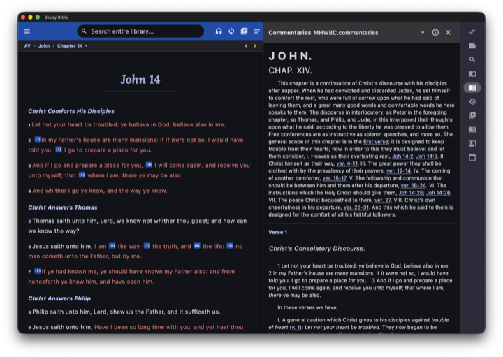
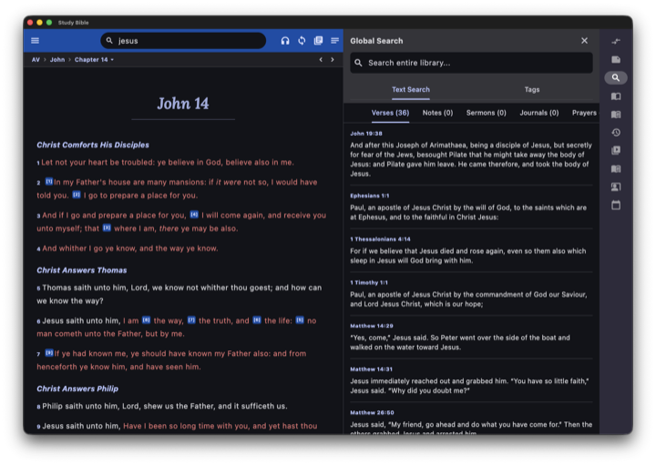
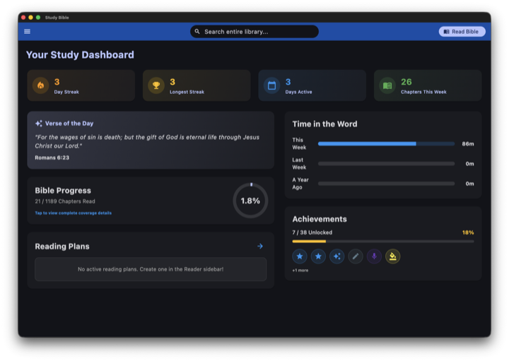
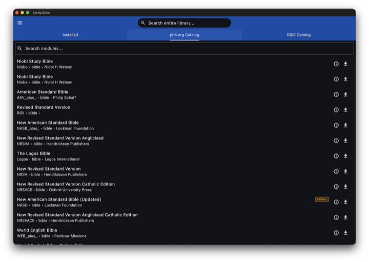

A study Bible that goes everywhere with you
Multi-version reading, commentaries, dictionaries, and rich study tools — with first-class cross-device sync. Free, open source, and cross-platform.
Android · Windows · macOS · Linux
Everything for serious study
A complete study environment that works offline and stays in sync across your devices.
Multi-version reader
Parallel panels, version swap, verse selection, verse-by-verse or flowing paragraph view, and highlight bands.
Commentaries & dictionaries
Verse-reference lookup, parallel view, multi-dictionary search, and tap-a-word definitions inline as you read.
Study tools
Journals, prayer tracker, sermon builder, reading-plan generator, custom notes, and bookmarks.
Progress dashboard
Reading coverage with per-book drill-down, reading pace, achievements and badges, plus a time tracker.
Content manager
Install Bibles, commentaries, and dictionaries from ph4.org and SWORD repositories — OSIS, MyBible, and SWORD import.
Cross-device sync
Highlights, notes, bookmarks, journals, prayers, and progress synced via zero-cost file sync like Syncthing or a cloud folder.
See it in action
Click any image to view it full size.
{kind=link}

{kind=link}

{kind=link}

{kind=link}

Download
Free and open source — no accounts, no tracking. Every link points to the newest release automatically.
Linux also ships as a Flatpak.
Windows & macOS builds are unsigned — see the install notes for the one-time bypass.
iOS isn't distributed yet — build from source.
All releases & changelog →
Built on great open resources
Study Bible is made possible by these upstream projects and datasets.